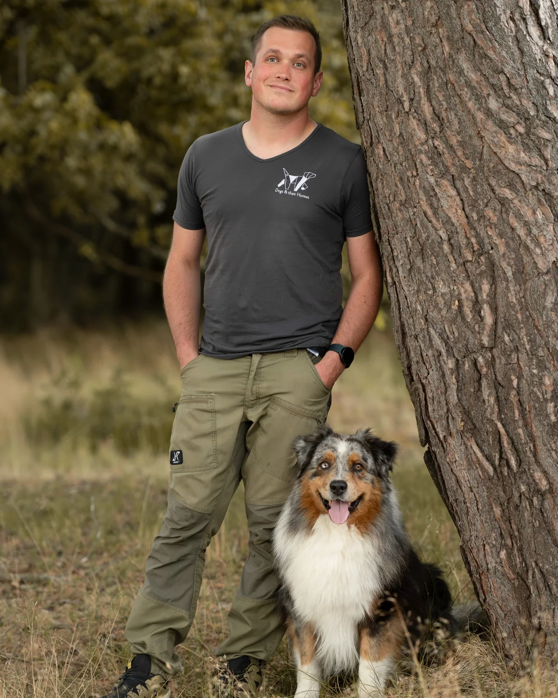
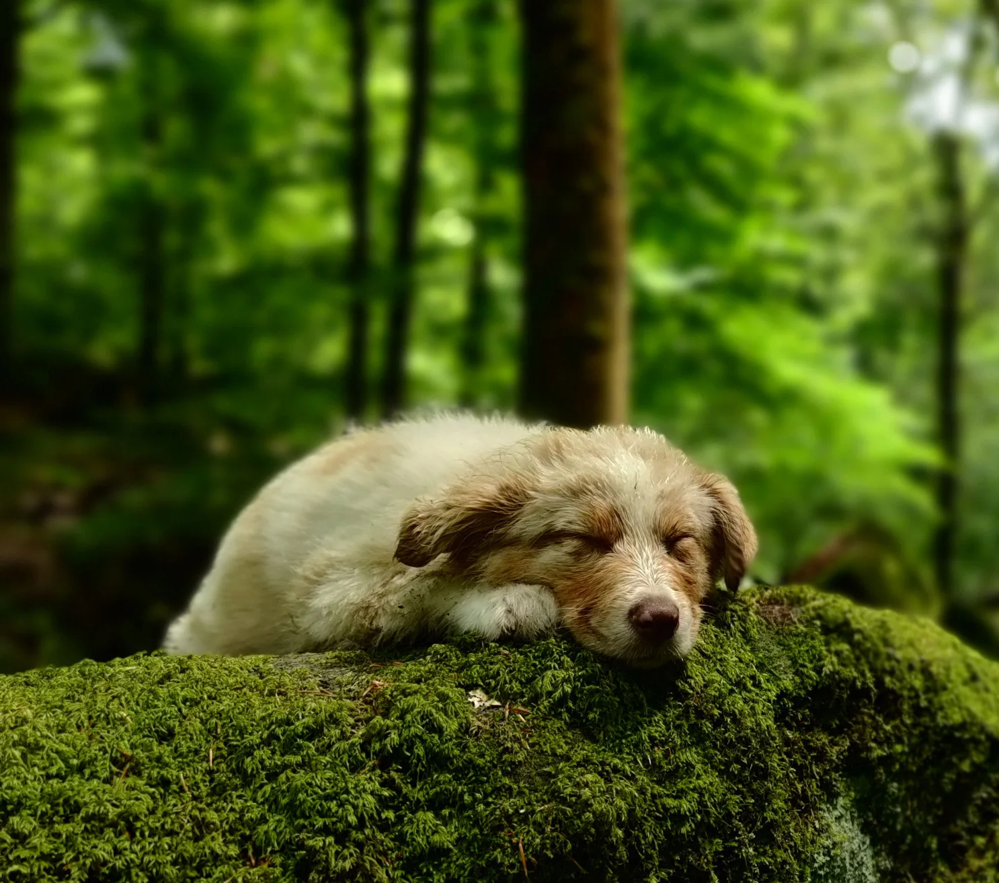
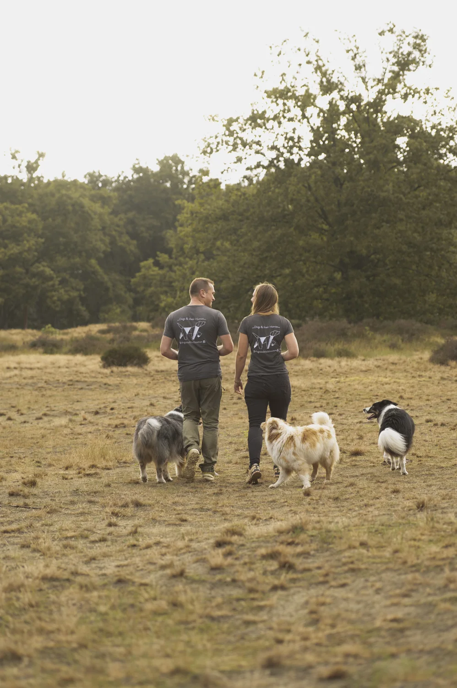
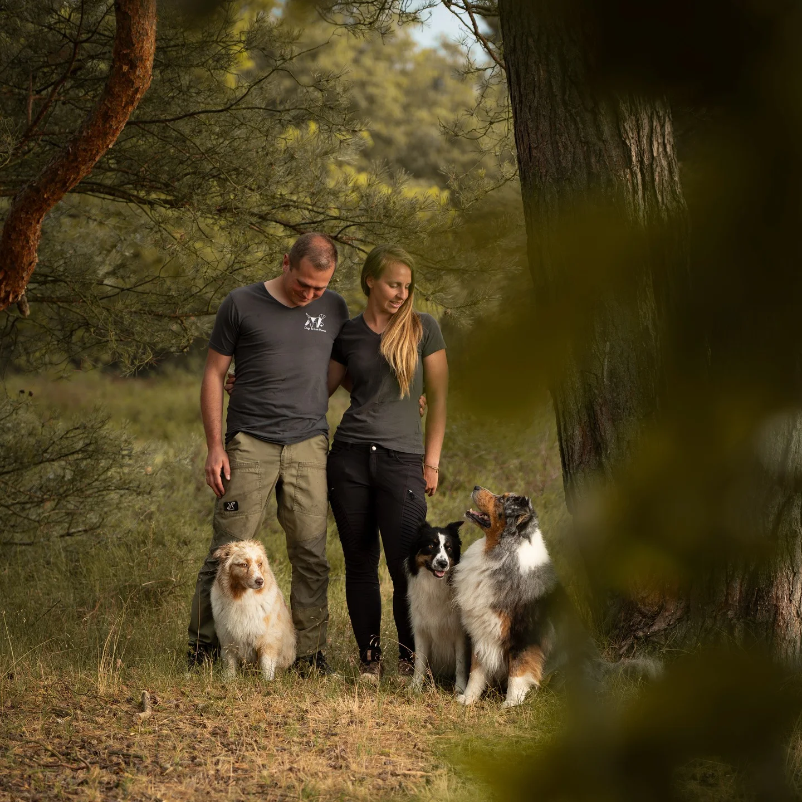

"Van een onzekere vocale puppy, naar een zelfzeker en zelfstandige pomeriaan! Toen we dachten dat ons sociaal leven helemaal voorbij was, kon Sara ons bijstaan bij het leren alleen thuisblijven."
Tony LabriqueGoogle-review

Wij zijn Sara en Frederik. We begeleiden honden en hun baasjes zonder oordeel, met oefeningen die passen in jullie echte leven. Geen hond of baasje hoeft perfect te zijn.
Geen losse tips, maar een plan. Je kiest een volledig traject of losse individuele lessen, afhankelijk van wat jullie nodig hebben.

Voor honden die trekken, uitvallen, bewaken of moeilijk tot rust komen.

Rust in huis, bijten en spelen, veilig socialiseren en alleen leren blijven.
Vraag naar het trajectJe hond kent de oefeningen, maar kiest er steeds vaker voor om ze niet te doen. Herkenbaar?

Groepslessen, groepswandelingen, een wandelweekend en zelfs een groepsreis met je hond naar Pitztal in Oostenrijk in 2027.
Vraag de data op
Onze liefde voor honden bracht ons van de hondenschool naar diverse opleidingen, en uiteindelijk naar het begeleiden van honden en hun baasjes.
We weten uit eigen ervaring hoe zwaar ongewenst gedrag kan wegen. Onze eerste eigen hond leerde ons hoe frustrerend dat is, maar ook hoeveel er mogelijk wordt als je weer begrijpt wat je hond nodig heeft.
Ongewenst gedrag betekent niet dat je een slechte hond hebt. Of dat jij gefaald hebt.
Hoe communiceren honden en waar komt gedrag vandaan? Je leest het op je eigen tempo, naast de lessen.
Geen kunstmatige demonstraties op een oefenveld. We werken aan de momenten waar jullie echt vastlopen.
We brengen het gedrag, jullie leefomgeving en jullie hulpvraag in kaart, en kiezen samen het traject dat past.
Met ons handboek Life with Dogs leer je hoe je hond communiceert. Zo begrijp je wat je ziet.
Oefeningen voor jullie dagelijkse leven: op straat, thuis, met bezoek. We volgen op en sturen bij.
"Van een onzekere vocale puppy, naar een zelfzeker en zelfstandige pomeriaan! Toen we dachten dat ons sociaal leven helemaal voorbij was, kon Sara ons bijstaan bij het leren alleen thuisblijven."
"Sara & Frederik hebben ons goed op weg gezet met puppylessen en vragen die we hadden bij de opvoeding van onze Lexi. We kunnen genieten van een gezinshond die overal mee naartoe kan! Wij zijn fan!"
"Ik ben zo dankbaar voor Sara. Ze bracht Bassie en ons gezin dichter bij elkaar. Op een gezonde manier grenzen leren trekken en nabijheid geven is zo waardevol."
Vertel ons kort wie jullie zijn en waar jullie tegenaan lopen. Wij bekijken welke begeleiding het best bij jullie past.

Ik maakte deze demo voor jullie om te tonen wat er kan. Na een kort gesprek maak ik er iets veel persoonlijkers van, helemaal naar jullie wens.
Vrijblijvend. Ik kom langs of we bellen.
Op maat, op jullie eigen domein.
Geen voorschot. Jullie betalen pas als alles klaar is.
Hosting, domeinnaam en kleine wijzigingen, zoals nieuwe openingsuren.
Omdat een voorbeeld meer zegt dan een mail. Zo zien jullie meteen wat er kan, en het kost jullie niets.
Nee. Het gesprek is vrijblijvend. Vinden jullie het niks, dan is het daarmee gedaan.
Na ons gesprek staat jullie site binnen 10 tot 14 dagen online.
Zeker. Jullie domeinnaam kan gewoon blijven, de nieuwe site komt in de plaats van de oude.
Nee, dat doe ik op basis van ons gesprek. Eigen foto's zijn mooi meegenomen, maar niet nodig om te starten.